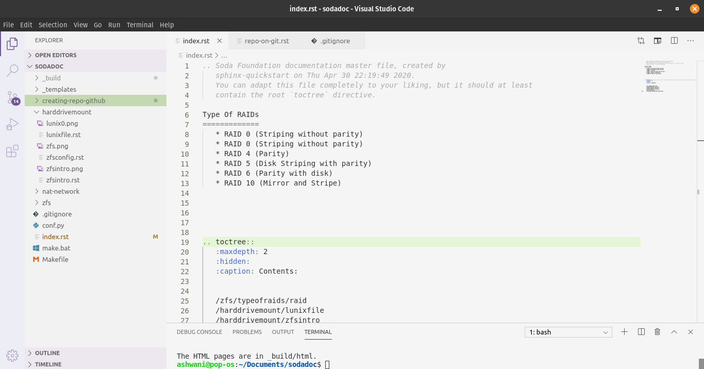
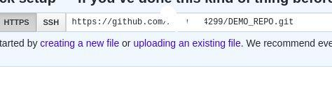

Adding an existing project to GitHub¶
Using the command line¶
Open Your project in the respective Code Editor.¶
Open Terminal in code editor.¶

Initialize the local directory as a Git repository.¶
$ git init
Add the files in your new local repository. This stages them for the first commit.¶
$ git add . # Adds the files in the local repository and stages them for commit. To unstage a file, use 'git reset HEAD YOUR-FILE'.Note
Name any specific directory after example:
$ git add. _build -f
Commit the files that you’ve staged in your local repository.¶
$ git commit -m "First commit" # Commits the tracked changes and prepares them to be pushed to a remote repository. To remove this commit and modify the file, use 'git reset --soft HEAD~1' and commit and add the file again.
At the top of your GitHub repository’s Quick Setup page, click to copy the remote repository URL.¶
In Terminal, add the URL for the remote repository where your local repository will be pushed.¶
$ git remote add origin remote repository URL # Sets the new remote $ git remote -v # Verifies the new remote URL
Push the changes in your local repository to GitHub.¶
$ git push origin master # Pushes the changes in your local repository up to the remote repository you specified as the origin
Importing Source Code TO Github.¶
Creating a new repository¶
You can create a new repository on your personal account or any organization where you have sufficient permissions.
In the upper-right corner of any page, use the drop-down menu, and select New repository.

Select the account you wish to create the repository on. Type a name for your repository, and an optional description.

Choose a repository visbility & click on Creating repository…
Repository is ready to use.